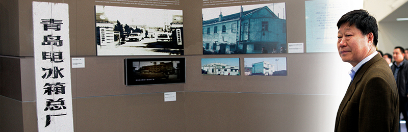

CEO致辞
破一微尘出大千经卷
—— 致创客的一封信人类社会的每一次繁荣进步都离不开科技的突破，但人类文明的每一次飞跃发展更离不开思想的解放。当互联网带来指数科技的繁荣，我们又一次站在了时代的风口，就在大工业发展正在把每一个个体变成机器部件的最危急关头，时代列车转入一个新的轨道，“零距离”、“去中心化”、“分布式”的互联网思维把我们带进一个充满生机与挑战的人人时代，一个人人创客的时代。
历经三十年的创新发展，海尔从一个濒临倒闭的集体小厂成长为今天的全球白电第一品牌，在全球，海尔拥有数以亿计的用户，每天，十几万台海尔产品进入全球市场。人类工业文明的先进成果成就了海尔的今天，让海尔得以在短短三十年的时间走过传统发达国家企业百年的道路。我们追上了曾经奉为经典的榜样，同时也失去了可资借鉴的标杆。面对新的挑战，我们剩下唯一没有被时代抛弃的武器是永远的两创精神，永远创业，永远创新。
唐太宗曾经问群臣，创业与守成孰难？他心里的答案是，创业难，守业更难。海尔的企业文化对这个问题的回答是，如果把创业和守业割裂来看就永远没有正确的答案，唯一的出路是只有创业没有守业。
创业精神的天敌是自己曾经成功的经验和思维定势，《道德经》云，胜人者有力，自胜者强。海尔文化的基因只有一个密码，那就是自以为非。
企业如此，每一个人也是如此。因为，在互联网时代，每一个人都是自己的CEO，每一个人都应该成为创业家。
创业家，与企业家只有一字之差，其内涵和本质却有天壤之别。企业家还是以企业为中心，而创业家却是以用户为中心。企业家以创造完美的产品和服务为使命，而创业家以创造用户最佳生活体验为中心。企业家以规模和利润为成就标尺，而创业家以用户资源和粉丝为荣耀北斗。企业家以管理和控制为权力之杖，而创业家以自组织为魔法宝盒。成千上万人成就一个企业家，而每一个创新的个体都可以成为一个创业家。正所谓“破一微尘出大千经卷”。
创业家。在海尔的创业平台上，你的名字叫创客。
三十年，既轻如尘芥弹指可挥去，三十年，又重如山丘难以割舍。其区别在于，你是生产产品的企业还是生产创客的平台。海尔选择的是，从一个封闭的科层制组织转型为一个开放的创业平台，从一个有围墙的花园变为万千物种自演进的生态系统。
创客。在你创业激情勃发的视野里，海尔的名字叫做创客公地。
创业初期，我们为社会奉献的是海尔牌产品，进而，我们以向社会提供海尔牌服务为宗旨，今天，我们向社会开放海尔的资源，为创客们提供的将是海尔牌的创业平台。
在表层意义上，海尔向社会开放U+智慧生活的API，每一个创客都可以在此基础上延伸开发产品。
在深层意义上，海尔向社会开放供应链资源，每一个供应商和用户都可以参与海尔全流程用户体验的价值创造。
在本质意义上，海尔向社会开放机制创新的土壤，搭建机会均等结果公平的游戏规则，呼唤利益攸关各方共建共享共赢。
自2005年以来，海尔就已经开始人单合一双赢模式的探索和试错，为此，我们不惜放弃对传统绩效的单一追求。在没有标杆的摸索中，我们宁愿承受外界的质疑和批评。但我们没有轻言放弃。因为鼓励我们坚持下去的不是成功，而是对时代精神的求索。
1994年，海尔创业十周年之际，我曾写过一篇文章，文章的名字叫《海尔是海》。今天，我想说，海尔是一朵云，海再大，仍有边际。云再小，可接万端。
开放，开放，再开放。今天，在海尔的云创平台上，已经孕育和孵化出一百多个创客小微，他们既有海尔的在册员工离开企业进行的创业，也不乏社会上的创业者来海尔平台的在线创业者。他们值得赢得尊重，我也要向他们表示感谢。因为，海尔的创业平台转型本身也是一种创业，作为平台的海尔，不是三十年历史的海尔，而是一个初生的婴孩，一轮初升的朝日，每一个在海尔平台创业的创客，你们既是平台上的创业者，同时也是平台的建设者。
致敬，创客！致敬，伟大的创客时代！